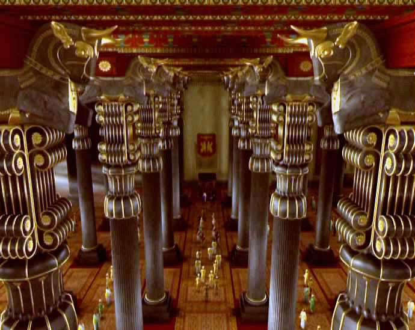
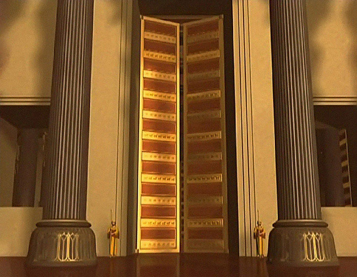
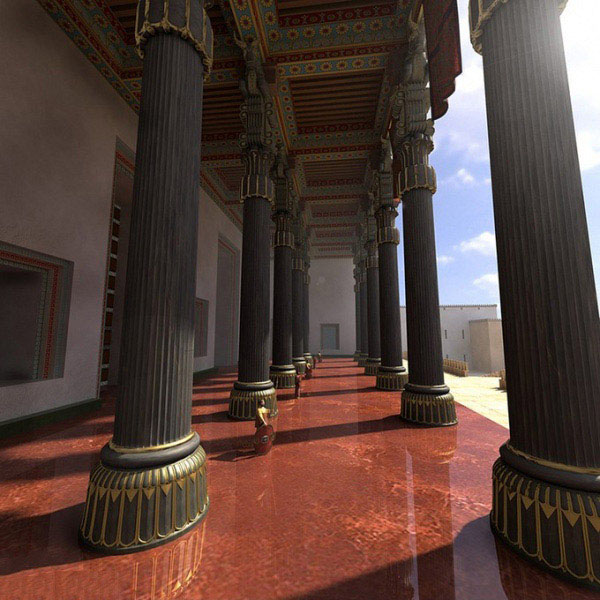

The Apadana, also known as the “Audience Hall” was the greatest and most magnificent building in Persepolis. Built by King Darius The Great, it consisted of over 72 coloumns that were 25 meters tall. The roof was built out of some of the finest woods like cedar, ebony, and teale. This building showed off all the King’s power and glory. The most significant use for this building was to host many of the Kings’ great festivals. The largest of these festivals was the celebration of the Iranian New Year called “Nowruz.” At this festival held at the beginning of each spring, the King would host all his subjects throughout the Achaemenid Empire and they would all bring him gifts and tributes. The Apadana also contains some of the best artwork found throughout the city. The Apadana was specifically target to be destroyed by Alexander The Great because it was the symbol of the King’s power and might.
   Back to Index